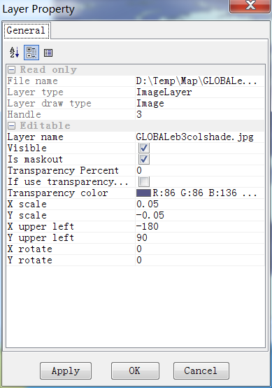

Press ‘Add Layer’ button and select a supported map data file to open it.
In this case, we select to open ‘country1.shp’ file. ‘country1.shp’ is a polygon shape file, so it is opened as a colored map. The default color is light yellow.

Double click the layer name of ‘country1.shp’ to open its ‘Layer Property’ dialog to change the layer’s apperance.
Vector layer properties:

Image layer properties:
Raster layer properties:

Web map layer properties: